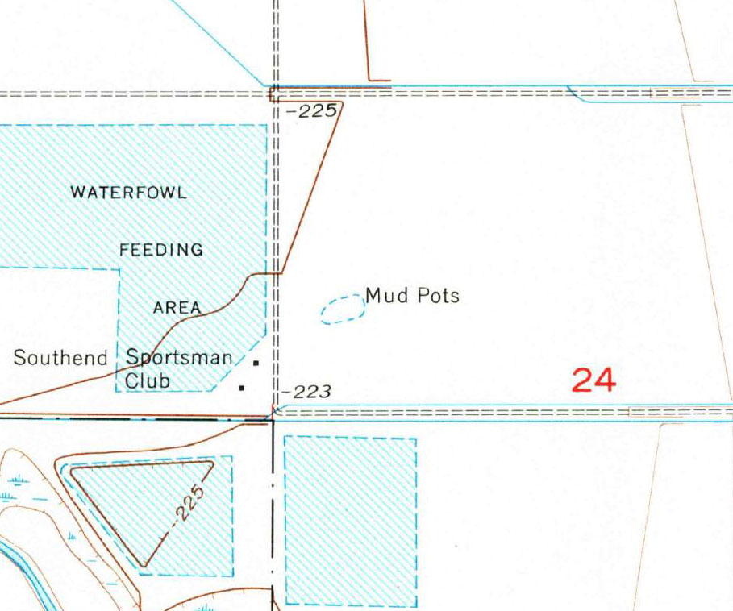
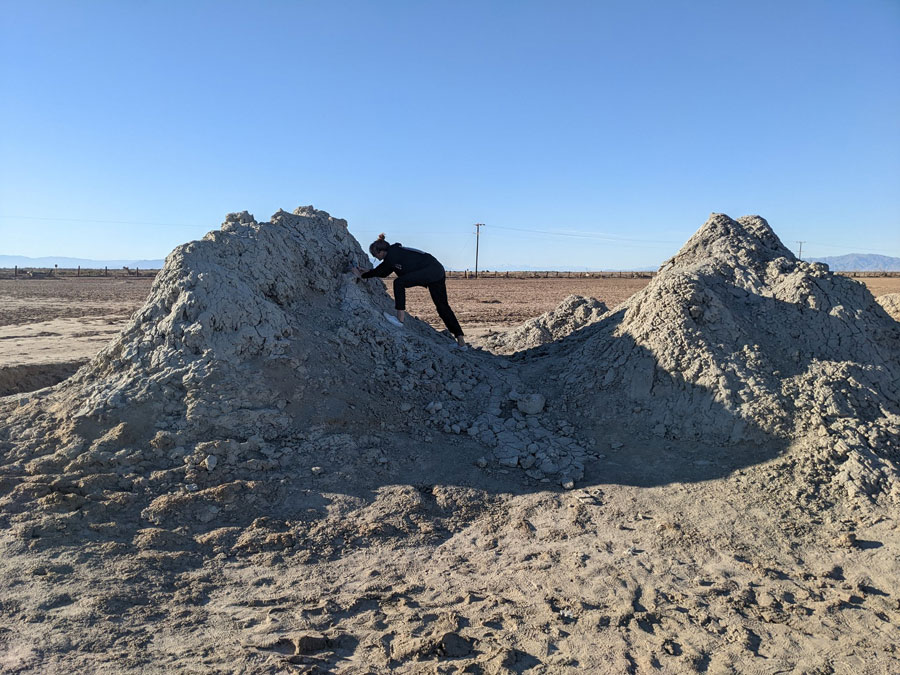
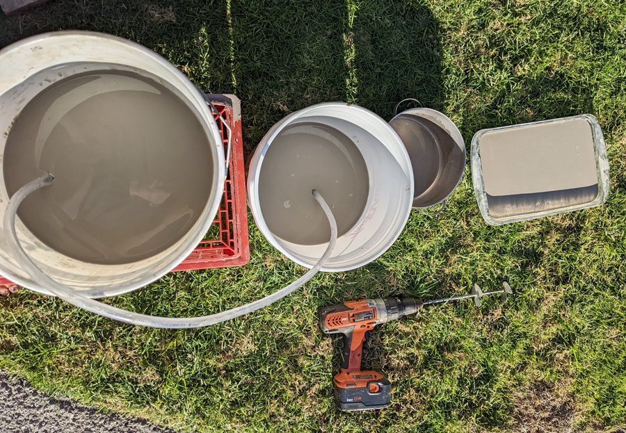
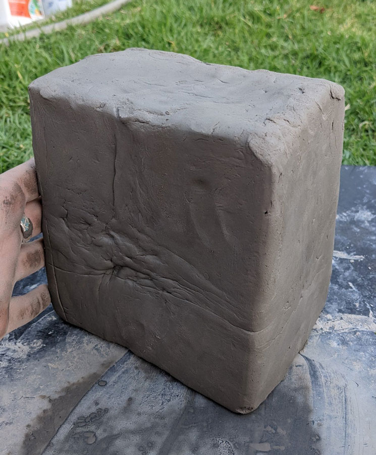
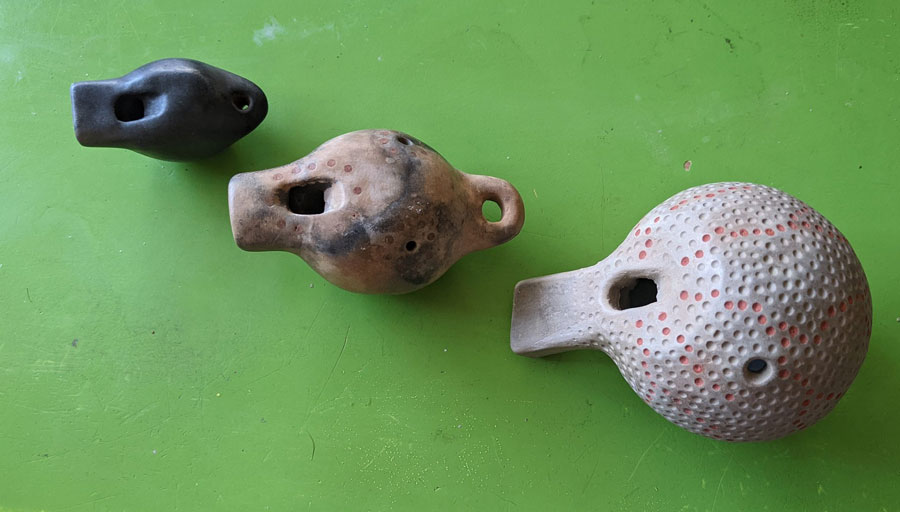
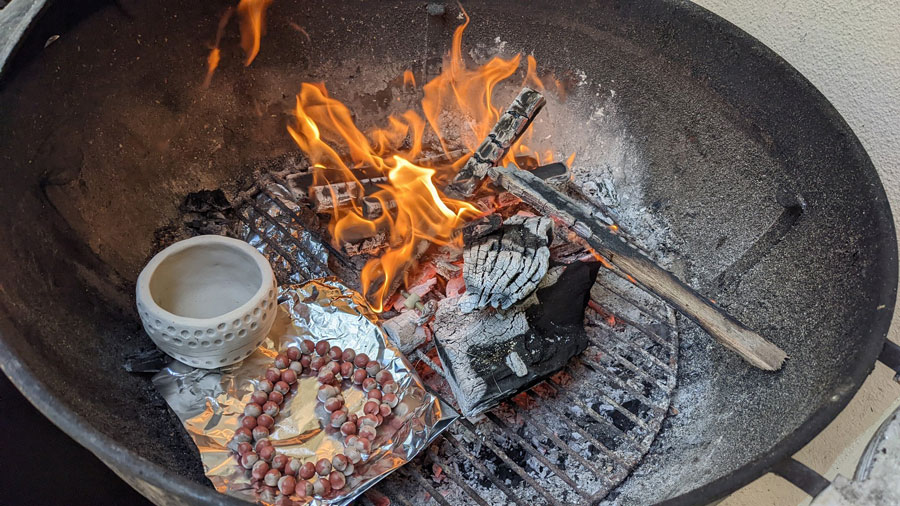
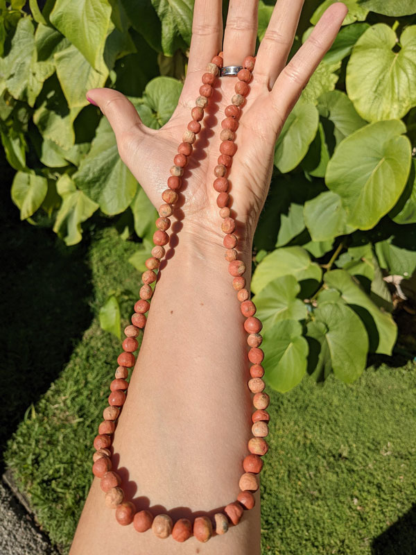

Several years ago while watching YouTube, I came across a wonderful channel called Primitive Technology. The man who runs the channel has produced a series of videos documenting his experiments with learning the skills needed to survive in the Australian rainforest.
His channel is very unlike something you might see on cable TV. There are no dangerous stunts. There are no cliffhangers. Instead, he spends his time quietly learning to catch shrimp from a creek, or building a thatched hut to live in. While he started off in the most primitive fashion, he has gradually developed more advanced skills, including refining iron from soil and attempting to turn it into useful objects with only a wood fire.
One of the more useful materials he has worked with has been the natural clay he finds in the the area, which he has fired into bricks and roof tiles for his dwelling, and pots for carrying water. I was fascinated.
Some time later, I took a day trip to the Salton Sea with a friend (it's about three hours by car from Los Angeles, where I live). The sea is famous, or perhaps infamous, for being a massive ecological disaster in the making. An accident during the creation of irrigation canals in California's Imperial County at the turn of the last century flooded the desert valley then known as the Salton Sink. By the time they got the flooding under control, a small ocean had been created.
Civic boosters and people looking to get rich off real estate were responsible for the area's next transformation from accidental curiosity into a tourist attraction. By the middle of the 20th century, resort towns had popped up along its hores and Southern Californians flocked there for water skiing, fishing, swimming, and luxuriating.
The good times would not last forever. The sea, not having many natural water sources of its own, was kept filled primarily through agricultural runoff from farms to its south. The pesticides and fertilizers flowing from those farms meant the sea would grow ever more polluted as time went by. At the same time, farming in the area was getting wiser with its water use, both voluntarily and through government-mandated cuts. That meant less runoff entering the sea, which might be good under other circumstances, but since that runoff represesnts basically the only source of water for the sea, it started drying up. Now, as the sea shrinks, it grows saltier and its pollutants more concentrated. Massive fish kills are common, and the sea just smells kind of bad. The former resort towns have shriveled as well, and now many visitors to the area are there to experience its post-apocalyptic atmosphere. I was one of those visitors.
Among the sights my friend and I saw that day were the geothermal mud volcanoes, also known as mud pots, located on the sea's southeastern shore, just a little southwest of Niland, CA.
You wouldn't know it if you look for the clues, but the area has been the site of volcanic activity. The remains of these volcanoes are known as the Salton Buttes. One of these low hills is home to the Red Island Marina, named for the fact that when water levels in the sea were higher, the dormant volcano was an island. Though none of these volcanoes has erupted in perhaps more than 10,000 years, they are merely dormant, and the heat from the magma associated with them provides energy for the second largest geothermal field in the state.
Thats very cool and all, but I was excited see that geothermal energy where it was escaping without being tapped for human purposes. These mud volcanoes and mud pots form when superheated water works its way to the surface, carrying sediments with it. The result is an otherworldly landscape of miniature volcanoes that spew steaming, gurling mud instead of lava.
I just wanted to see them because they're weird, but when we got there, I realized the "mud" pouring out of them was actually a very fine and smooth clay. Remembering that YouTube channel, I scooped up as much of the clay as I could reasonably bring home in a car.
Once I had the clay at home, I began the process of 'washing' it. This is a necessary step for many clays harvested by a hobbyist because it removes sand, small rocks, and organic material like sticks, leaves, and bugs. The process is simple. You mix the clay with water so it has the consistency of milk. After a few minutes, you pour the liquid off into another container. Because clay particles stay suspended much longer than do sand and rocks, those unwanted materials will have already sunk to the bottom of the first container and are left behind. After a day or two, the clay in the second container will settle to a layer at the bottom, and the clear water above can be poured off.
From that point, it's just a matter of letting that clay slurry dry until it attains the consistency you would expect from artist's clay. It's simple, but it's also time consuming. In all, I think I spent the better part of three weeks processing 10 pounds of clay. But, in the end, I was left with a very smooth a clean block of clay I could work with.
I don't have a potter's wheel, so basically everything I made with the clay needed to be made by hand. I tried a variety of pinch pots, beads for jewelry, small figurines, and even simple whistles.
Since I don't have a kiln, I tried firing my first pieces in a campfire during a camping trip with my sister. It worked! A wood fire, if well stoked, gets hot enough to transform clay into terra cotta (terra cotta means baked earth, after all).

I did the rest of my firings in my Weber charcoal barbecue in my back yard, experimenting with using iron oxide pigments to add color to the clay and raku firing techniques to variegated patterns or even solid black objects.

I did have some failures. Thicker objects tend to explode when they still have some moisture trapped deep inside them, and I lost several pieces to this. And a simple wood fire cannot get hot enough to fire the clay past the terr cotta stage, so the resulting pieces will be porous to water.
All in all, this was a fun thing to experiment with. I ended up with some neat pieces, including a couple of necklaces I regularly wear. In the future, perhaps if I live somewhere with more room, I would like to try building a wood-fired kiln so I can fire pieces into stoneware and try glazing pieces. I would also like to gather natural clay from some other places to see how it compares in consistency and final color.